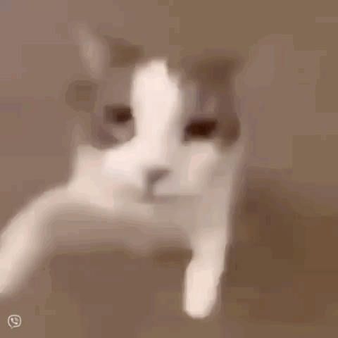

Hola Bonito!
Se que esto no es la mejor pagina del mundo, aun estoy aprendiendo jeje, pero queria hacer algo mas fuera de lo convencional ya que no puede ser en persona jeje. Si tienes curiosidad acerca de que es esto y no lo intuyes todavia baja.

Bueno, se que las cosas no fueron como queriamos, se que las cosas se complicaron mucho pero quiero que sepas que eres la persona mas comprensiva y cariñosa que he conocido y te quiero un mundo. Intente alejarme porque me hacia mucho daño saber que no estarias en mivida como yo queria y me molestaba muchisimo el hecho de que no estabas dispuesto a intentar una relacion a distancia cosa que me dolia muchisimo. No se que pasará de aqui a un futuro, tengo muchisimas ganas de verte en serio, no quiero pensar en lo que vaya a pasar despues, solo anticipo el momento de verte de nuevo. Se que ambos la cagamos, pero casi 4 añitos despues seguimos aqui, a pesar de todo y la distancia. Eres un hombre increible Edwar, muy honestamente. Me has escuchado y me has apoyado con todo, algo que es increiblemente importante para mi. Pase por demasiados cambios y a pesar de todo aqui estas <3 Te quiero bonito, aunque no te lo diga mucho, en serio lo siento. me cuesta un poco mas abrirme despues de aceptar la idea de que ibamos a terminar pero estoy dispuesta a volver a intentarlo contigo. Se que no siempre será perfecto, pero nada nunca lo es, queramos o no. Asi que, la pregunta del millon...
Quieres ser mi novio?